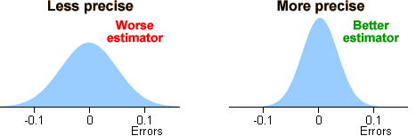
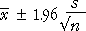
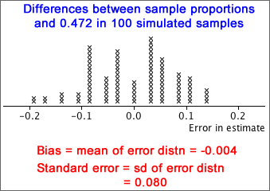
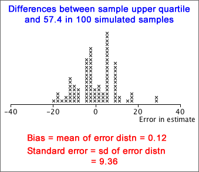

If you don't want to print now,
Inference about a population
Data are usually collected to provide information about some population or process underlying the data. The data are often modelled as a random sample from this population.
Comparing beers
A brewery wishes to assess the effect of an additive on the alcohol content of its premium beer. Several batches are brewed, both with and without the additive, and the alcohol content of each batch is recorded.
Here there are two underlying populations — distributions describing the alcohol content of beer with and without the additive. The shapes of these distributions could potentially differ in various ways, but the brewer is mostly interested in whether the additive changes the mean alcohol content:

The sample means provide estimates of the corresponding population means and are the basis for answering the question.
The difference in sample means is an estimate of the difference between the unknown population means.
Error in an estimate
When we use a summary statistic from a random sample to estimate a population parameter, the estimate will usually not be exactly the same as the parameter. The error is the difference between the parameter and its estimate.
| Parameter | Sample statistic | Error |
|---|---|---|
| population mean, µ | sample mean, |
|
| population proportion, π | sample proportion, p | p - π |
Silkworm poisoning
Silkworms must be killed after spinning their cocoons since the silk is damaged when the moths break free. An experiment was conducted to estimate the mean survival time of silkworm larvae after poisoning with sodium arsenate.
Since we are not interested in the specific 80 silkworms, we estimate that the population mean survival time is 272.6 seconds.
How big is the estimation error likely to be?
Error distribution
When a sample statistic (such as  or p ) is used
to estimate a population parameter, (µ or π)
there is an error,
or p ) is used
to estimate a population parameter, (µ or π)
there is an error,
error = (estimate - parameter )
Since the error depends on random sample data, it is a random quantity and has a distribution,
Although we cannot determine the actual error when there is only a single sample, it is often possible to find properties of its distribution.
For many types of estimate, we can find the error distribution or an approximation to it.
Target of small errors
Consider two possible sample statistics that could be used to estimate the centre of a symmetric population distribution — the sample mean and sample median. For each, there is an error,
error for mean =  - µ
- µ
error for median = median - µ
The best estimator will be the one whose estimation erro is usually "closer to zero". This corresponds to two desirable characteristics of the error distribution.
Centred on zero
Ideally, we want the error distribution to be centred on zero. Such an estimator is called unbiased.
Sample means and proportions are unbiased estimators of the corresponding population parameters.
Small spread
Ideally, we also want error distribution to be tightly concentrated on zero — i.e. to have a small spread.

We call the standard deviation of the error distribution the standard error of the estimator. We ideally want an estimator with a small standard error.
standard error = standard deviation of the error
Note also that
standard error = standard deviation of the estimator
so a good estimator is one with a small standard deviation.
Describing accuracy with an interval estimate
Reporting a single value as a parameter estimate (a point estimate) does not convey any information about the estimator's accuracy — i.e. the likely size of the estimation error.
It is better to give an interval of values within which we are confident that the parameter will lie — an interval estimate.
Will an interval estimate include the actual parameter value?
If an interval estimate is too narrow, there will be very little chance of it containing the true parameter value, but intervals that are too wide do not convey much information.

We will later describe how to quantify this idea of "confidence".
Distribution of the sample mean
A population mean, µ, is usually estimated by the mean from a random sample.

If the population standard deviation is σ,  has a distribution with
has a distribution with
 = μ
= μ
 =
= 
and is approximately normal if the population is normal or n is reasonably large.
Distribution of the estimation error
Since the error in the estimate is simply the sample mean minus a constant (µ), its distribution has the same shape but is centred on zero,
error =  − µ ~ normal (0,
− µ ~ normal (0,
 )
)

Expressed in an equation,
Prob ( -e* < error < e* ) = 0.95
95% confidence interval
Since the error is the difference between the estimator and the unknown parameter, this can be rewritten as:
Prob ( estimate - e* < parameter < estimate + e* ) = 0.95
The interval
estimate - e* to estimate + e*
is called a 95% confidence interval and we have 95% confidence that it will include the unknown parameter value.
Confidence interval from standard error
The 70-95-100 rule of thumb states that about 95% of values in most distributions are within 2 standard deviations of the mean. For unbiased estimators (with zero mean), we therefore have the approximation:

This leads to the approximate 95% confidence interval
estimate - 2 s.e. to estimate + 2 s.e.
Since the standard error of most commonly used estimators can be readily found by either a formula or statistical software, a 95% confidence interval can be easily found for most estimators.
Refinements
If we can only find an approximation to the error distribution, the method above would only give an approximate 95% confidence interval. The '± 2 s.e.' approximation is a useful guide in most circumstances, but we will refine this type of confidence interval for some estimators to make the confidence level closer to 95%.
Estimating a population mean
We first examine how to estimate the mean, µ, of a population when the population standard deviation, σ, is a known value. (In practice, σ is usually unknown, but we leave this until later in this section.)
The sample mean,  , is approximately normal, with
, is approximately normal, with
 = μ
= μ
 =
= 
When  is used to estimate µ, the error is approximately
is used to estimate µ, the error is approximately
error =  − µ ~ normal (0,
− µ ~ normal (0,  )
)
so the standard error of  is
is  .
.
95% bounds for the error
Applying the 70-95-100 rule of thumb to the error distribution,
Prob( error is between ± 2 ) is approximately 0.95
) is approximately 0.95
This can be refined using the properties of the normal distribution to get an exact probability of 0.95.
Prob( error is between ± 1.96 ) = 0.95
) = 0.95
95% confidence interval
Since  will be within 1.96
will be within 1.96  of µ
with probability 0.95, we are 95% confident that µ
is in the interval
of µ
with probability 0.95, we are 95% confident that µ
is in the interval
This is a 95% confidence interval for µ and the interval has a confidence level of 0.95.
Example
Consider a type of measurement that is normally distributed with known σ but unknown mean, µ:
X ~ normal (μ , σ = 0.0068)
The mean of a random sample of n = 16 values will therefore be normally distributed with standard error
 = 0.0068 / 4 = 0.0017
= 0.0068 / 4 = 0.0017
From this, we can obtain bounds on the error:

has a confidence level of 0.95 — i.e. it is a 95% confidence interval.
In practice however, the value of σ is rarely known.
It is tempting to simply replace σ in the formula by its sample equivalent, s.

However replacing σ with s makes the confidence interval more variable and this means that it is less likely include µ — the confidence level is less than 95%. If the sample size, n, is large, the confidence level is close to 95%, but with smaller sample sizes the true confidence level can be much less than the target 95%. For example,
The confidence interval must be modified if σ is unknown.
Confidence interval using a t-value
The interval estimate
has a lower confidence level than 95%. In order to achieve a 95% confidence level, the interval must be widened. This is done by replacing 1.96 by a slightly larger number:

The replacement constant tn-1 is a value greater than 1.96 that depends on the sample size, n. The value n - 1 is called the degrees of freedom of the constant.

where t19 = 2.093.

Since p is based on a random sample, it varies from sample to sample and has a distribution. The estimation error is:
error = p - π
Since π is unknown, we never know the value of the error, but we can find its approximate distribution. This will allow us to assess the likely size of the error.
Distribution of proportion
The proportion of successes from a random sample with probability π of success, p , has a distribution with mean and standard deviation
μp = π
σp = 
Distribution of estimation error
The estimation error is p - π and its distribution has the same shape as that of p, but is shifted to have mean zero. The bias and standard error are therefore
bias = μerror = 0
standard error = σerror = 
Standard error from data
Unfortunately, the formula for the standard error of p involves π, and this is unknown in practical problems. To get a numerical value for the standard error, we therefore replace π with our best estimate of its value, p .
bias = μerror = 0
standard error = σerror = 
Example
In a random sample of n = 36 values, there were x = 17 successes. Our best estimate of π is the sample proportion, p = 17/36. Using this estimate, the distribution of the number of successes in similar samples would be
X ~ binomial (n = 36, π = 17/36)

Example
In a random sample of n = 36 values, there were x = 17 successes. We estimate the population proportion, π, with p = 17/36 = 0.472. The approximate normal distribution for the errors is shown below.

This is greatest when π = 0.5 and this provides a worst-case value for the standard error. Whatever the value of π, the standard error of the estimate will be less than

The '±' values of the 95% confidence intervals for all proportions reported in the poll will be less than this value — sometimes considerably less.
How much data do I need to collect?
Consider estimation of a population mean, µ, from a random sample of size n. A 95% confidence interval will be of the form

If we want our estimate to be within k of µ with probability 0.95, then we need n to be large enough that

Provided we can make a reasonable guess at the likely value of the sample standard deviation, s, it is possible to determine the necessary sample size by trial-and-error in the above inequality.
Equation for the sample size
If n is reasonably large the t-value in the inequality will be approximately 1.96, so

This inequality can be re-written in the form

In practice, it is best to increase n a little over this value in case the sample standard deviation was wrongly guessed.
Example
If we expect that a particular type of measurement will have a standard deviation of about 8, and we want to estimate its mean, µ, to within 2 of its correct value with probability 0.95, the sample size should be

If we want our estimate to be within k of π with probability 0.95, then we need n to be large enough that

In order to use this inequality, we need a guess at the value of p — it does not need to be particularly accurate.
A small pilot survey is often conducted to obtain a preliminary estimate for the proportion.
If we can do no better, the 'worst-case' value, p = 0.5 can be used, but the resulting sample size may be higher than needed.
Equation for the sample size
The inequality can be re-written in the form

Example
To estimate a proportion with 95% confidence of being within 0.04 of the correct value, we need

The value k arises from the standard normal distribution,

The value k = 1.96 gives a confidence level of 95%, but different confidence levels can be found with other values of k.
| k | Confidence level |
|---|---|
| 1 | 0.683 |
| 2 | 0.954 |
| 3 | 0.997 |
| 1.645 | 0.90 |
| 1.960 | 0.95 |
| 2.576 | 0.99 |
Although 95% confidence intervals are most commonly reported, sometimes k is chosen to give a 90% or 99% confidence interval.
Estimating a probability with different confidence levels
A 95% confidence interval for a probability, π, has the form

Replacing the constant 2 with 1.645 gives an interval with approximately a 90% confidence level, and using 2.576 results in a 99% confidence level.
Estimating a population mean (unknown standard deviation)
When the population standard deviation, σ, is unknown, a 95% confidence interval for µ has the form

where tn-1 is obtained from a table. Changing the confidence level to 90% or 99% involves changing this constant. The appropriate value can again be obtained from a table. (We give no further details here.)
Standard errors and CIs from formulae
If a formula can be found for the standard error of an estimator, an approximate 95% confidence interval can be found from
estimate - 2 s.e. to estimate + 2 s.e.
For some estimators, there is no formula for the standard error, so a different approach is needed.
Rainfall example
Understanding of the distribution of rainfall lets farmers make better choices about the crops that are grown and when they are planted, especially in areas prone to drought. A useful summary is the upper quartile of the rainfall distribution in a month — the rainfall that is exceeded in only 1 out of 4 years.
The diagram below shows October rainfall in Samaru, Nigeria for the 56 years between 1928 and 1983.

Assuming that there is no climate change, the sample upper quartile is our best point estimate of the upper quartile for the underlying population distribution, but there is no convenient formulae for its standard error.
Standard error of a proportion
If statistical theory does not provide the error distribution for the estimator of interest, a simulation can often be used to find properties of the error distribution numerically.
This methodology is illustrated with a simulation to find the standard error of a sample proportion. Since we already have a formula,
standard error = 
a simulation is unnecessary, but it allows us to simply illustrate the method.
Example
A sample of n = 36 values are selected from a population with probability π of success, so the number of successes will have a binomial distribution,
X ~ binomial (n = 36, π)
If we knew the value of π, we could take repeated samples from this binomial distribution, find the estimation error, (p - π) for each sample, and build up the error distribution.
If x = 17 successes are observed, our best estimate of π is p = 17/36 = 0.472, so we could perform this simulation using p instead of π.

The assets-to-liabilities ratios have a fairly symmetric distribution and the diagram below shows a normal distribution whose mean and standard deviation are the same as those of our actual data.

This approximate normal distribution has lower quartile 1.295, so we can perform a simulation with samples of n = 68 values from this distribution and find how far the sample lower quartiles are from this theoretical value — the error distribution.

A typical bootstrap sample is shown below:

The diagram below shows the 'errors' from 100 of these simulated bootstrap samples — the differences between the sample upper quartiles and that from the 'population' underlying the simulation, 57.4.

Using the 70-95-100 rule-of-thumb, our point estimate of the upper quartile, 57.4, is unlikely to be in error by more than about 20.
Bivariate data
Bootstrap sampling can be used to obtain an approximate error distribution in any situation where individuals are randomly sampled from a population. The scatterplot below shows a bivariate data set.
How accurately does the sample correlation coefficient, r = 0.787, estimate the underlying population correlation underlying the data?
Bootstrap
We can again find an approximate error distribution using bootstrap samples selected with replacement from the data. The scatterplot below describes one such bootstrap sample. The digits again represent data values that were sampled more than once.
From each of several bootstrap samples, we can find how far their correlation coefficient is from the "population" value, 0.787 — the estimation error.

The bootstrap error distribution provides us with an approximate standard error for the correlation coefficient. The correlation coefficient from our data set, 0.787, will probably be within 2 standard errors (approx 0.065) of the underlying population value.